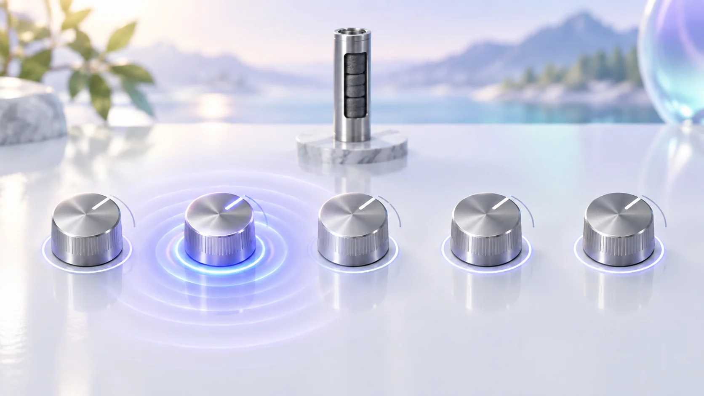
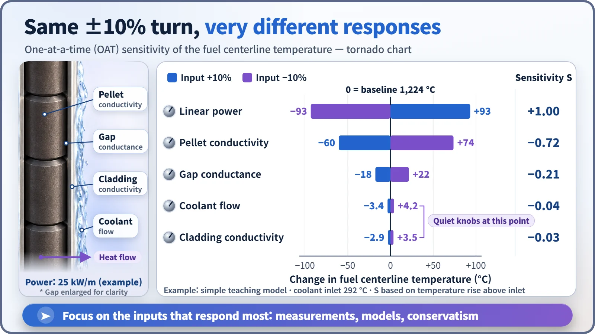
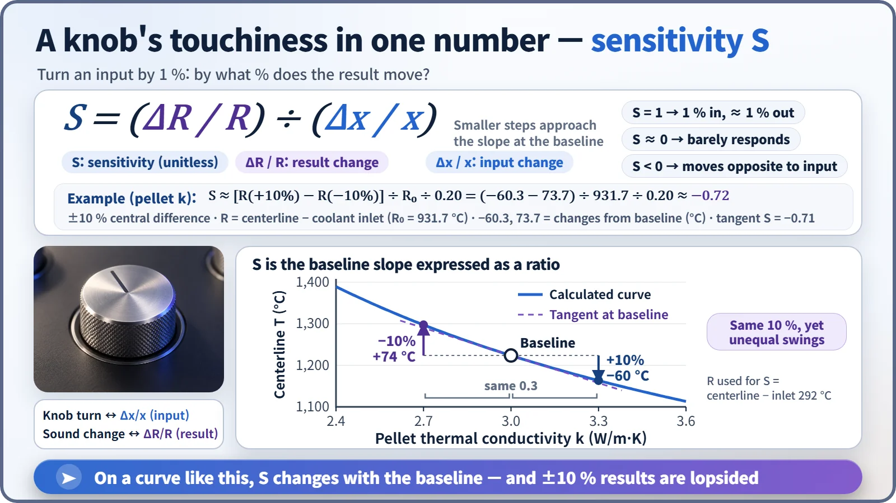

Modeling, Simulation & Computation · 260
Which Knob Really Matters? — What Sensitivity Analysis Is
Turn every input by the same 10% and see which ones really move the answer. The ranking tells you where to measure, refine and stay conservative.

Sensitivity analysis nudges a model's inputs one by one, measures how strongly the result responds, and ranks the inputs by influence. The ranking shows where measurements, model improvements and conservative assumptions matter most; a high sensitivity marks a knob to watch, not a danger. [1]
A quiz with five inputs
A program calculates how hot the center of a fuel rod gets from five inputs: the heat produced by one meter of rod (its power), the pellets' thermal conductivity, the conductance of the narrow gap between pellet and cladding, the coolant flow rate, and the cladding's thermal conductivity.
If all five could each be off by the same 10% and you could fund a measurement experiment on only one, which would you pick? Gut feeling usually says "the coolant." The method that answers with numbers is sensitivity analysis.
The sound engineer at the mixing desk
A concert mixing desk has dozens of knobs that don't all work equally. Some change the sound dramatically with the tiniest turn; others barely register. A seasoned engineer turns each a little during rehearsal to learn which are touchy and which are sluggish.
Sensitivity analysis does exactly that: it nudges a calculation model's inputs one by one, measures how strongly the result responds to each, and ranks them by influence. The knobs are the inputs; the sound is the result.
One knob at a time
The basic method is one at a time (OAT): hold every other input at its baseline, raise one input by 10% for one run and lower it by 10% for another. Five inputs take eleven runs including the baseline.
We did this for the quiz's fuel rod with a simple model built from teaching values. At the baseline, the fuel centerline temperature is about 1,224 °C.

| Input changed by ±10% | Change in centerline temperature | Sensitivity S |
|---|---|---|
| Linear power | about ±93 °C | +1.00 |
| Pellet thermal conductivity | −60 °C (+10%) / +74 °C (−10%) | −0.72 |
| Gap conductance | 18 to 22 °C | −0.21 |
| Coolant flow | 3 to 4 °C | −0.04 |
| Cladding thermal conductivity | a little over 3 °C | −0.03 |
Stacked largest first, the bars form a funnel, hence the name tornado chart. Power is an operating condition rather than something you'd measure, so the budget should go to pellet thermal conductivity. The coolant flow most people pick is a surprisingly sluggish knob here, because along the heat's escape path the biggest temperature steps are inside the pellet and across the gap. [2]
A knob's touchiness in one number
S = (fractional change in the result) ÷ (fractional change in the input): by what percentage the result moves when the input moves 1%. The units cancel, so inputs with different units share one scale. S = 1 means a 1% rise in the input gives about a 1% rise in the result; −1 means about a 1% fall; near 0, hardly any response. The sign gives the direction.

The example uses "degrees hotter than the coolant inlet" as the result, because zero degrees Celsius is an arbitrary reference and ratios of absolute Celsius values mean little.
Reactor physics runs the same calculation. Raise the neutrons released per fission by 1% for every nuclide and the effective multiplication factor rises by exactly 1%: an S = 1 knob. Most of the thousands of individual nuclear data values (cross sections) have very small S, so the job is to find the few large ones and measure them well. With thousands of inputs, perturbation theory computes all the sensitivities at once instead of turning knobs one by one. [3]
The blind spot of one knob at a time
Raising the conductivity 10% lowered the temperature by 60 degrees, but lowering it 10% raised it by 74. Temperature is inversely proportional to conductivity, and on a curve the slope differs at every point, so a sensitivity always carries the tag "at which baseline."
Turning one knob at a time also misses knobs working together. In real fuel, conductivity drops as temperature rises and the gap gradually closes as the fuel burns. Then analysts move to global sensitivity analysis, which shakes many inputs at once. [1]
Does high sensitivity mean danger?
No. It means the knob moves the result strongly. Known accurately and well controlled, it is no problem. Sensitivity analysis is a map of where to stand guard: focus measurements on touchy inputs, make sure conservative safety-analysis assumptions are applied to them, and leave sluggish inputs at standard values with confidence.
Uncertainty analysis asks a different question. Sensitivity turns every knob by the same 10% to ask "who's strongest?"; uncertainty also accounts for how inaccurate each knob actually is, asking "how much could the answer wobble?" A very touchy knob may barely shake the result if its dial can be read precisely.
Key takeaways
Dozens of knobs, but only a few grip the result. Sensitivity analysis finds those few with numbers instead of gut feel, so laboratory time and safety margins go where they are needed most.